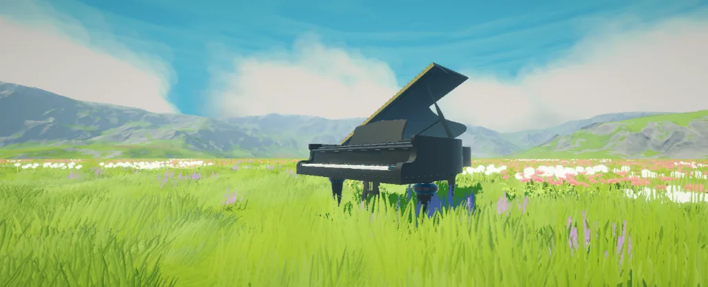

The working piano demo is not a game. It could be used in one, but for this project it is a system of scripts that I made to create a playable piano using raycasts and an auto-playing piano using MIDI files. Both are pretty straightforward. I learned a lot while creating this since I was in the early stages of getting into Unity3D.
Created by:
Robbie Ma
Working piano demo
A beautiful playable piano inside Unity.
